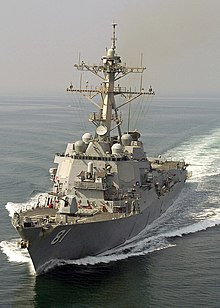
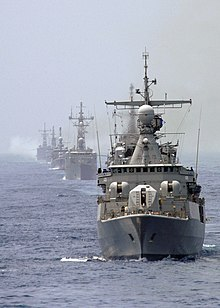

Destructor
¿Qué es?
En terminología naval, el destructor es un buque de guerra rápido y maniobrable diseñado para proporcionar escolta a buques mayores en flotas, convoyes o grupos de batalla, y defenderlos contra enemigos menores, pero de gran potencia de fuego (originalmente buques torpederos, posteriormente submarinos y aeronaves). Fueron originalmente desarrollados en 1885 por Fernando Villaamil para la Armada Española.
Historia
El nacimiento y el desarrollo del destructor, antes de la Primera Guerra Mundial, está relacionada con la aparición del torpedo autopropulsado en la década de 1860. Una armada tenía desde ese momento el potencial de destruir a una flota superior usando buques propulsados a vapor para lanzar torpedos. Una serie de buques rápidos fueron armados con torpedos y recibieron el nombre de torpederos. A comienzos de la década de 1880, éstos evolucionaron a pequeños buques de 50 a 100 t dotados de una alta velocidad para evadir a la artillería enemiga.
En principio, se consideraban peligrosos para una flota de combate sólo cuando ésta se encontraba anclada, pero cuando la velocidad y el alcance de los torpedos se fue desarrollando, el área de peligrosidad también aumentó. Por este motivo se empezaron a diseñar buques rápidos, cuya misión principal sería dar caza y destruir los torpederos. Además de la velocidad, entre las características principales de estos nuevos barcos debía estar el tener una gran autonomía y capacidad de navegación oceánica, ya que deberían acompañar en sus largos viajes a los cruceros y acorazados a los que protegerían.
Una vez que los destructores se convirtieron en los protectores en los fondeaderos, se observó que también podían encabezar a los torpederos. Desde ese momento, hasta la Primera Guerra Mundial, su papel principal eran proteger a la flota de los torpederos, así como realizar ataques con torpedos contra los acorazados enemigos. El papel de escoltar a los convoyes enemigos aún estaba lejos en el futuro.
Un importante desarrollo llegó en 1884 con el HMS Swift,3 un gran torpedero, equipado con seis cañones de 47 mm de tiro rápido y tres tubos lanzatorpedos. Aunque no era lo bastante rápido como para dar caza a los torpederos, sí que tenía el armamento necesario para enfrentarse a ellos. Ese mismo año el vicealmirante Manuel de la Pezuela y Lobo encargó al teniente de Navío Fernando Villaamil el diseño para la armada española de un buque con mayor radio de acción y mejor habitabilidad que los torpederos convencionales.4 El proyecto se encargó en 1885 al astillero inglés James and George Thompson, de Clydebank, bautizado como Destructor. Fue catalogado como buque contratorpedero, designación similar a las denominaciones francesa, contre-torpilleur; italiana, cacciatorpediniere; polaca, kontrtorpedowiec; checa, torpédoborec o griega, antitorpiliko (αντιτορπιλικό).
El destructor fue puesto en grada en 1886, y entró en servicio en 1887. Su desplazamiento era de 380 t, y estaba equipado con un cañón González-Hontoria de 90 mm Hontoria, cuatro cañones Nordenfelt de 57 mm, 2 cañones Hotchkiss de 37 mm y 3 tubos lanzatorpedos Schwarzkopf. Su dotación era de 60 hombres. En términos de armamento, velocidad (22,5 nudos en sus pruebas) y dimensiones, las especificaciones de diseño le daban su papel de cazar a los torpederos y capacidad oceánica. El Destructor es considerado mayoritariamente el primer destructor de buques torpederos construido nunca y tuvo influencia en el concepto y diseño de los destructores posteriores de la Marina Real británica.5678
Destructor
La vida en los primeros
|  |
Los primeros destructores eran lugares realmente incómodos y con muy baja calidad de vida a bordo. En los buques de la clase Havock ningún miembro de la tripulación podía evitar ser molestado por el resto, con los oficiales durmiendo en las sillas amortiguadas en vez de en camas. La primera clase de destructores británica con cabinas separadas para los oficiales, o calefacción para el capitán, fue la clase River de 1902.
|
Primeras tácticas de los destructores
El propósito inicial de los destructores era proporcionar protección a los buques de mayor porte contra los torpederos, pero las distintas fuerzas navales, pronto apreciaron la flexibilidad de su velocidad, dando como resultado un buque multipropósito. El vicealmirante Sir Baldwin Walker fijó las siguientes tareas para los destructores de la Marina Real británica:
- Defender el avance de la flota ante el despliegue de torpederos.
- Explorar costas hostiles para buscar pasos seguros para la flota.
- Búsqueda de puertos enemigos para acosar con sus torpedos a los buques enemigos, o evitar el regresos de las flotas enemigas a sus puertos.
- Ataque a flotas enemigas.